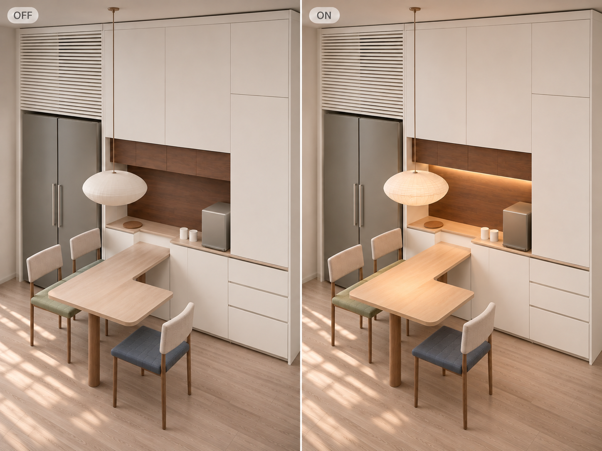
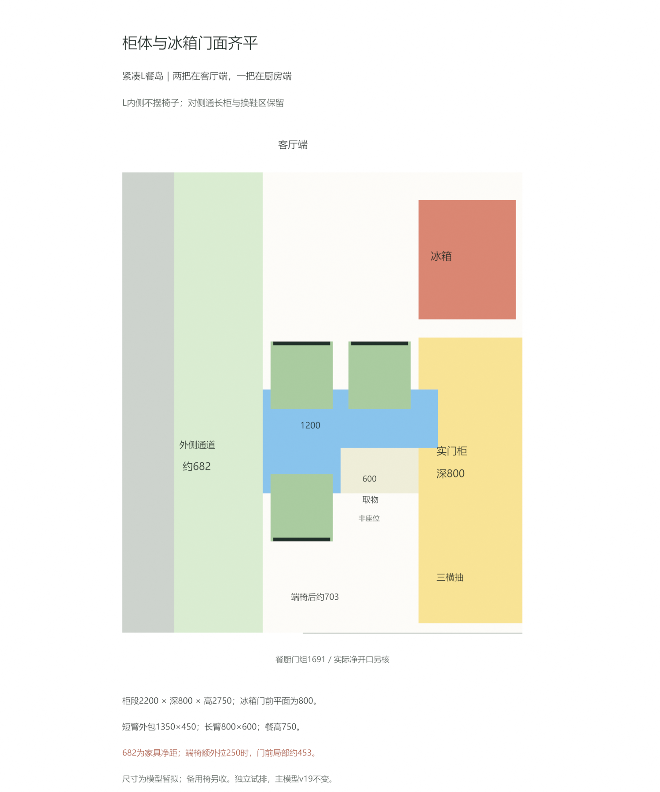
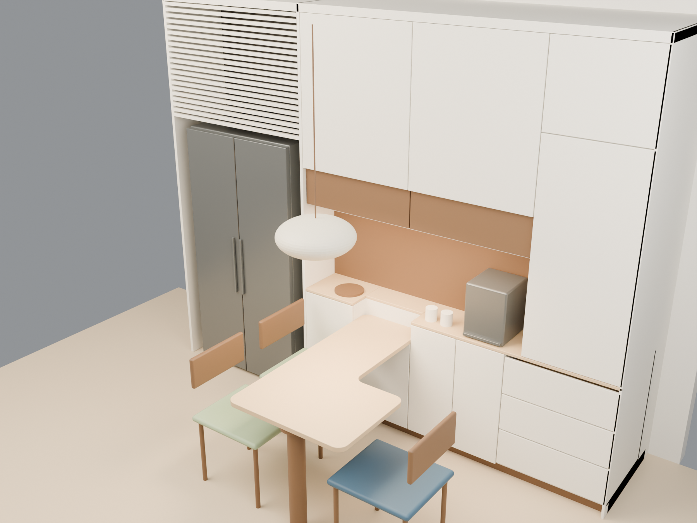

已有更新：用户已选同色等高U形、右端开放置物区和完整上柜＋下拉取物。请看独立09最新方案；下方08的750餐高及右侧高门列只作历史。
历史独立方案08 · 2026-11-06 · 未融合主模型
柜面与冰箱齐平，座位放在L的两个外端
按最新要求加深餐边柜，并重新设计L餐岛。两把日常椅在客厅侧外端，一把在厨房侧外端；内侧只取物，长边外侧留给入户通行。第四把另收备用。
已确认的是齐平关系、可调整餐岛、外侧就座和三常用一备用。以下具体尺寸与外观为本轮设计提案。主模型仍为v19，原28件家具及VR保持，未启动v20。
开关灯对照

餐边柜怎么改
2200 × 800 × 2750 mm
| 整墙组合 | 冰箱区1200＋餐边柜2200＝3400 |
|---|---|
| 门面基准 | 冰箱机身深750＋后方暂留50，门面在离墙800处；柜门面及台面前沿跟随该线 |
| 原下柜深度 | 450 → 800，增加350 |
| 上柜实际储物深度 | 350，前移到齐平面；后部封闭空腔不计作储物 |
| 台面／开放段 | 台高880；开放段高600，背板前可用深约332 |
| 薄翻门／上柜 | 1480–1730薄柜；1730–2700上柜；顶部50封闭收口到暂定天花 |
| 下柜 | 三排横抽，抽面约694宽，抽箱550深；柜门均为实门 |
800是当前占位冰箱的门面基准，不是已选冰箱的安装尺寸。把手会突出门面；冰箱完整开门、散热和抽屉取出仍需按最终型号校正。
L餐岛怎么缩
餐高750 · 圆角R60
| 连接短臂外包 | 1350 × 450，含150进入固定柜段；柜外有效伸出1200 |
|---|---|
| 转折长臂外包 | 800 × 600 |
| 整件外包 | 沿墙800 × 伸出方向1350；两臂重叠，不按两张桌子相加 |
| 桌面 | 30厚浅木，转角R60；偏置圆支脚与隐藏连接 |
| 座位 | 客厅侧两把并排，各600位置；厨房侧一把端坐 |
| 椅子包络 | 深520 × 宽480 × 高850，前150暂入桌下 |
| 连接点 | 450宽固定承托段，不做活动柜门；880柜台与750餐面错台130 |
将三横抽放到L自由端之外，减少取物时与桌面相撞。冰箱旁400宽段作为固定缓冲板，不把被椅子挡住的区域虚算成日常收纳柜。
通道与取物：紧凑，仍需现场核对
在现模型3082宽的餐厅、对侧400深原柜都保留的前提下，外侧连续家具净距约682 mm，内侧关闭柜门时约600 mm。三把椅子没有沿外侧长边摆放，避免继续压缩这条通道。旧07的832不再适用。

- 厨房端椅背至餐厨边界约702.5；额外拉椅250后局部约452.5，需要错时使用与让行。
- 600是柜门关闭时的取物区宽度，不等于抽屉全开后仍可从后方通过。内侧不安排座位。
- 当前已核对三椅完整静态包络、椅与冰箱机身不重叠、门面齐平，以及模型保存重开；没有据此认定所有人的进出动作、冰箱全开和取物动作均已通过。
- 若希望主通道回到800以上，需要额外调整对侧柜、柜体齐平策略或餐岛形式；本轮没有擅自移动对侧柜和换鞋区。
保留原参考的层次与整体风格
四段式结构、薄翻门夹层、三排横抽、免拉手继续保留。暖白实门形成完整面，胡桃木中段向内退，浅木餐面从柜段接出；椅面用绿色与深蓝呼应客厅。关闭玻璃展示门的要求继续有效。
柜内灯藏在薄柜下口，照向背板与操作面；餐面上方保留独立柔光吊灯。开关灯只改变亮度与阴影，不改变家具、门板或材料。灯带光色与亮度均为概念表现，灯具产品尚未选择。
查看同版原生实体关系参考
